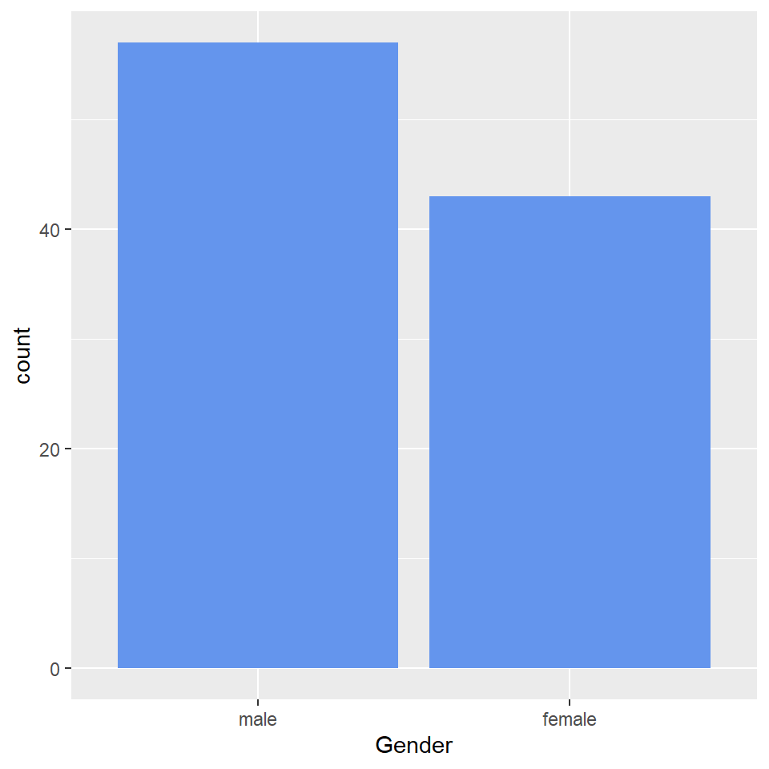
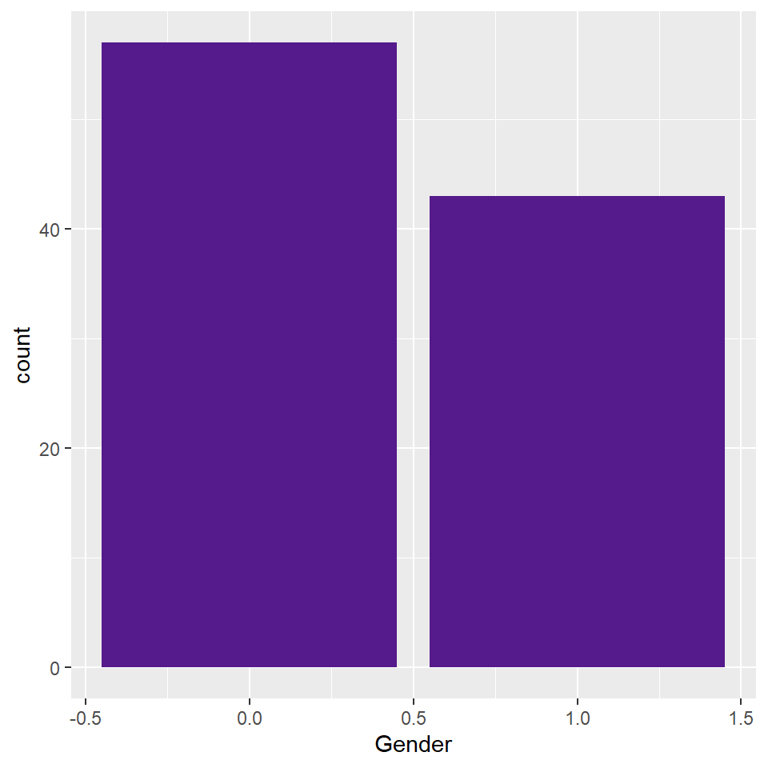

In most survey projects, you’ll find the importance to recode variables. In this tutorial, I will explain the steps needed to recode a variable from number to characters and vice versa.
I’ll create a data frame with 100 random sample with gender and marital status demographic variables.
rm(list = ls())
set.seed(123)
gender = sample(0:1, 100, replace = TRUE)
marital.status = sample(1:3, 100, replace = TRUE)
dem.data = data.frame(gender, marital.status)
as_tibble(dem.data)## # A tibble: 100 x 2
## gender marital.status
## <int> <int>
## 1 0 1
## 2 0 2
## 3 0 1
## 4 1 2
## 5 0 1
## 6 1 3
## 7 1 3
## 8 1 2
## 9 0 3
## 10 0 1
## # ... with 90 more rows## 'data.frame': 100 obs. of 2 variables:
## $ gender : int 0 0 0 1 0 1 1 1 0 0 ...
## $ marital.status: int 1 2 1 2 1 3 3 2 3 1 ...The structure of the data show both gender and marital status are numeric attributes, but the two are supposed to be factor variables. The as.factor () is useful in converting variables to factor.
dem.data$gender = as.factor(dem.data$gender)
dem.data$marital.status = as.factor(dem.data$marital.status)
str(dem.data)## 'data.frame': 100 obs. of 2 variables:
## $ gender : Factor w/ 2 levels "0","1": 1 1 1 2 1 2 2 2 1 1 ...
## $ marital.status: Factor w/ 3 levels "1","2","3": 1 2 1 2 1 3 3 2 3 1 ...The gender and marital status are transformed from integer to factor variables. Gender has two levels (0 and 1) while marital status has three levels (1, 2, and 3).
As a data analyst you might have prior knowledge of the variable meanings as indicated in the metadata or codebook. However, a reader or the audience might not understand the two plot because they don’t know what 0 and 1 mean in gender and 1, 2, and 3 in marital status, hence the need to recode variable.
dem.data = dem.data %>%
mutate(
gender.cat = recode(gender, "0" = "male", "1" = "female")
)
dem.data = dem.data %>%
mutate(
marital.status.cat = recode(marital.status, "1" = "single", "2" = "married", "3" = "divorced")
)
dem.data %>%
ggplot(aes(gender.cat)) +
geom_bar(fill = "cornflowerblue") +
xlab("Gender")
The audience can easily understand the two graphs as the labels are defined.
dem.data = dem.data %>%
mutate(
gender.num = recode(gender.cat, "male" = 0, "female" = 1)
)
dem.data = dem.data %>%
mutate(
marital.status.num = recode(marital.status.cat, "single" = 1, "married" = 2, "divorced" = 3)
)
dem.data %>%
ggplot(aes(gender.num)) +
geom_bar(fill = "purple4") +
xlab("Gender")
dem.data %>%
ggplot(aes(marital.status.num)) +
geom_bar(fill = "goldenrod4") +
xlab("Marital Status")Happy Coding !!!